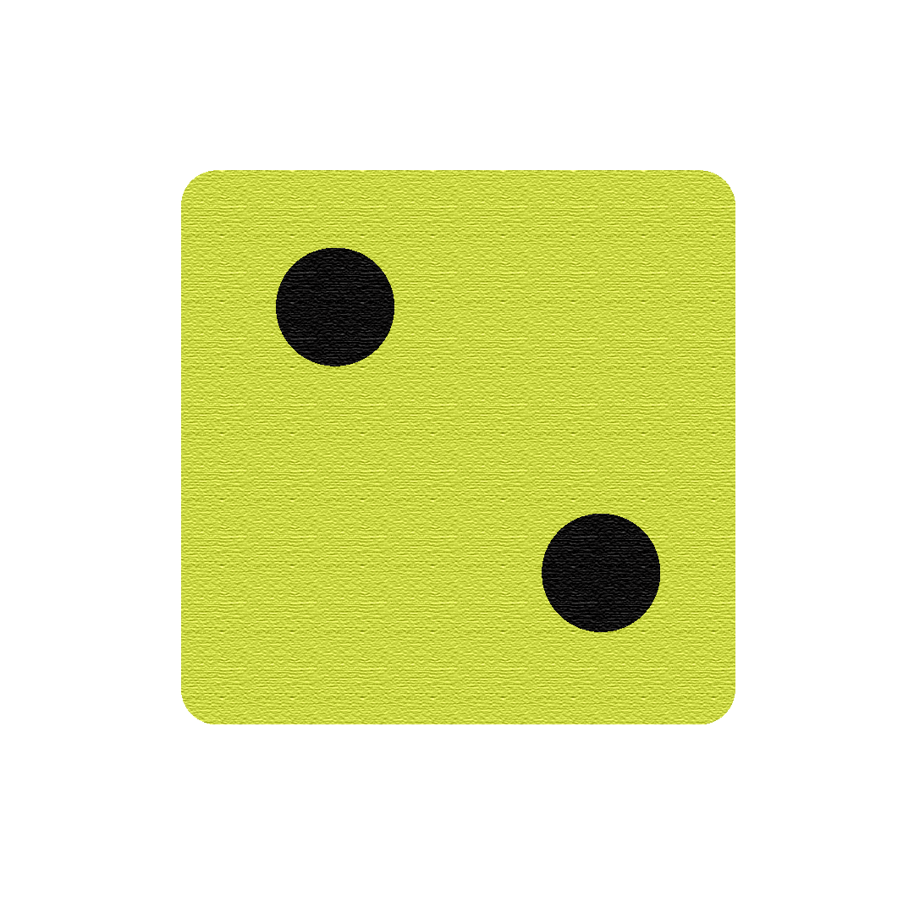
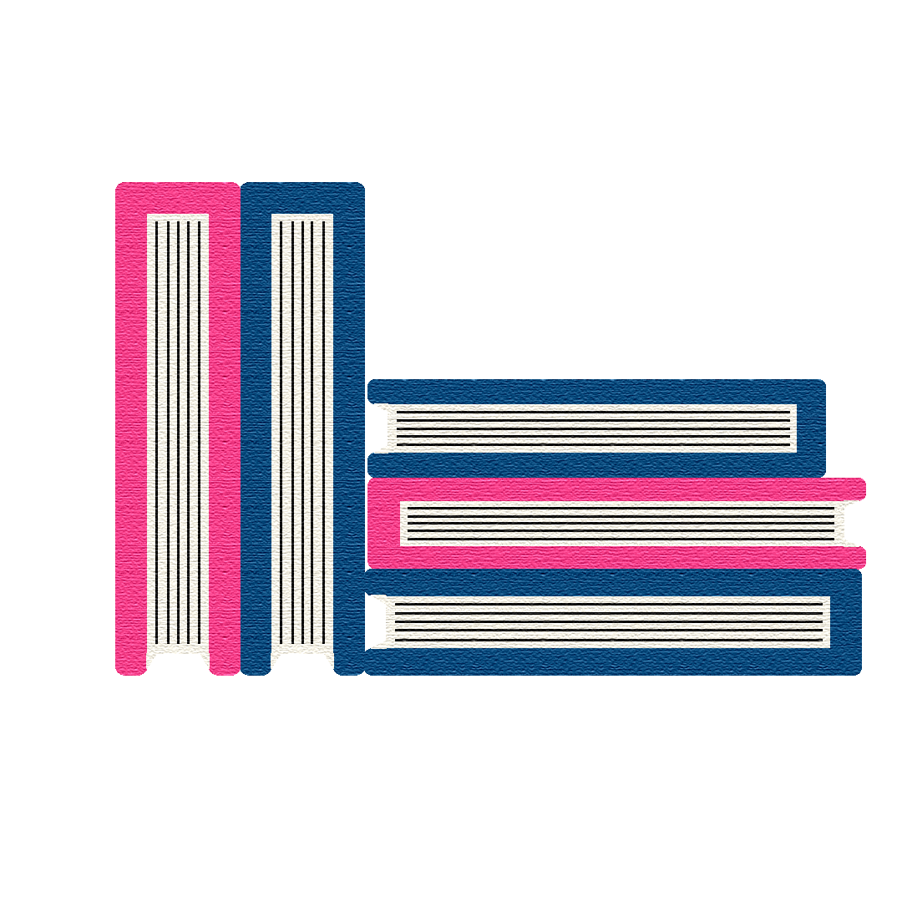

Um sistema que reúne materiais, orientações e propostas para aplicar jogos em contextos de ensino e aprendizagem — do editor colaborativo ao dashboard do professor.
Desenvolvida em parceria com a Universidade do Estado da Bahia (UNEB) e financiada pelo Programa InovaEDUCAÇÃO da CAPES. Coordenação: Profa. Dra. Vânia Gonçalves de Brito dos Santos.
Arrastar-e-soltar, cinco formatos de jogo, assistente pedagógico. Do rascunho ao publicado em cinco minutos.
Alinhamento automático de habilidades e dificuldade por turma. Não substitui — assessora.
Compatível com a realidade de conectividade das escolas públicas. Roda em navegador antigo, tablet compartilhado, celular do aluno.
Métricas em tempo real por turma, aluno e questão. O professor vê onde reforçar — antes da prova.
22 quizzes ativos em 10 disciplinas. Cada formato responde a uma intenção pedagógica — quem quer revisar, competir, exercitar memória ou traçar percurso encontra o modo certo.
A MVP entrega o produto integralmente — do wireframe ao dashboard do professor, do editor ao modo offline. Com transferência de titularidade, documentação técnica e style guide completos.